Тарификатор Бета
Онлайн-программа, которая помогает директорам распределять нагрузку между педагогами и готовить финансовые отчёты для бухгалтерии

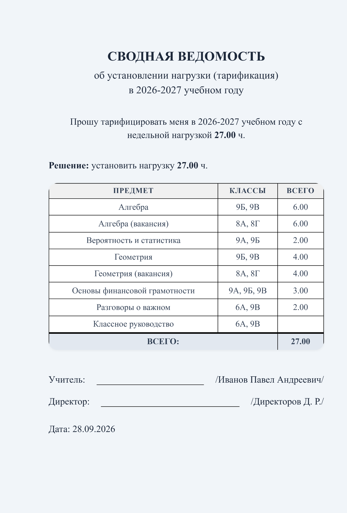

Для контроля нагрузки Подводит итог по учебным планам и отображает нераспределённые часы по классам
Для отчётности Хранит данные три года и обновляет нагрузку без ручных перерасчётов
Как это работает
«Тарификатор» — сервис для управления нагрузкой в школе. Он помогает сдавать тарификацию без долгих перепроверок и обновлять нагрузку во время учебного года. Сотни педагогов, классов и предметов — всё в одном месте. Познакомьтесь с возможностями сервиса:
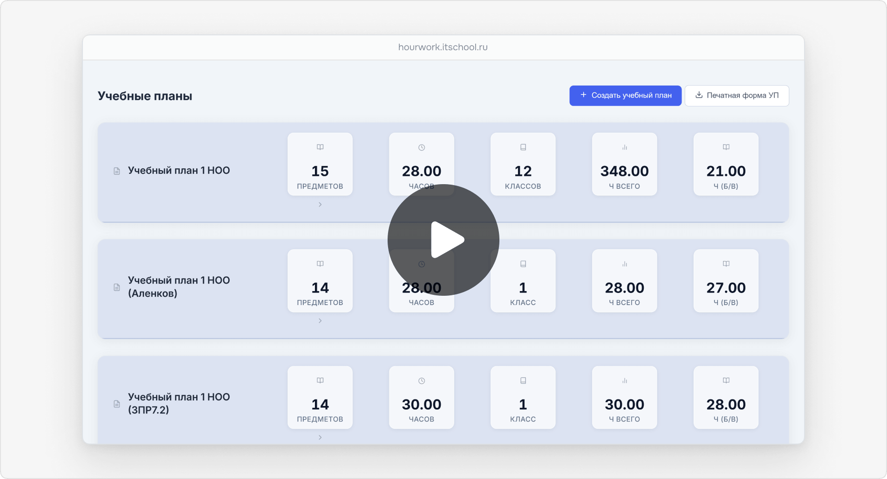
Наглядная нагрузка по каждому педагогу
Сервис отражает нагрузку всех преподавателей. По фамилии можно посмотреть назначения в отдельных классах, проверить классное руководство и заведование кабинетом. Программа показывает вакантные часы и отмечает педагогов с неполной ставкой.
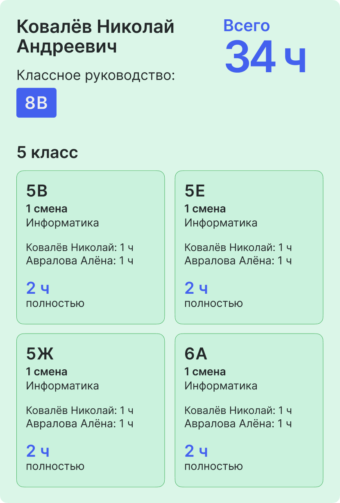
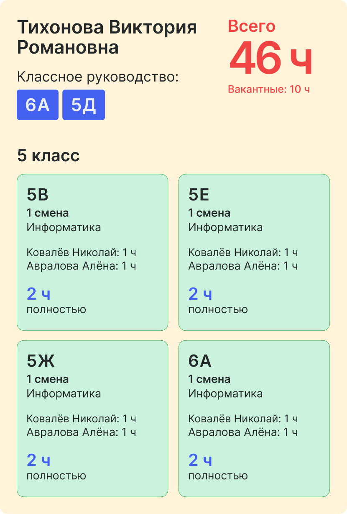
выше нормы
Гибкие учебные планы
«Тарификатор» собирает все учебные планы в одном месте. Он автоматически считает учебную нагрузку для школы: фиксирует количество классов и деление их на подгруппы. Можно сформировать индивидуальные учебные планы для детей на домашнем обучении и классов коррекции. В результате директор видит, сколько часов приходится на каждый предмет, курс и внеурочную деятельность.
Утверждённые учебные планы можно скачать, чтобы распечатать или опубликовать на сайте школы. При любых изменениях сервис пересчитает итоги — останется скачать актуальный файл.
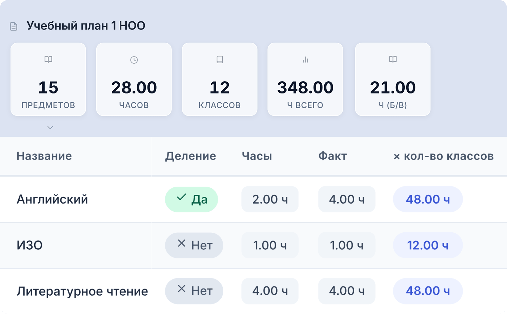
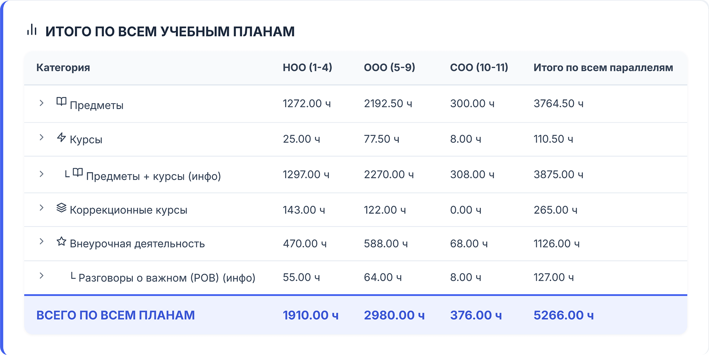
Подсказки для быстрого распределения
Сервис помогает перераспределить часы с учётом текущей нагрузки. Назначить часы можно двумя способами: по предмету для всей параллели и отдельно в каждом классе.
«Тарификатор» находит нераспределённые часы и классы без нагрузки, а при подборе предлагает специалистов из нужной предметной области. Сервис не ограничивает выбор, поэтому директор может учитывать предпочтения педагогов по классам.
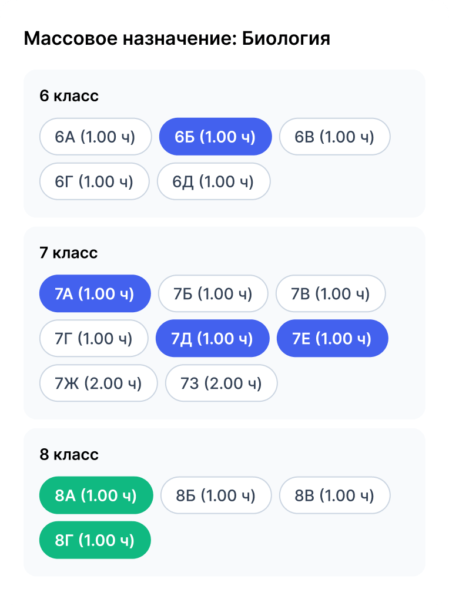
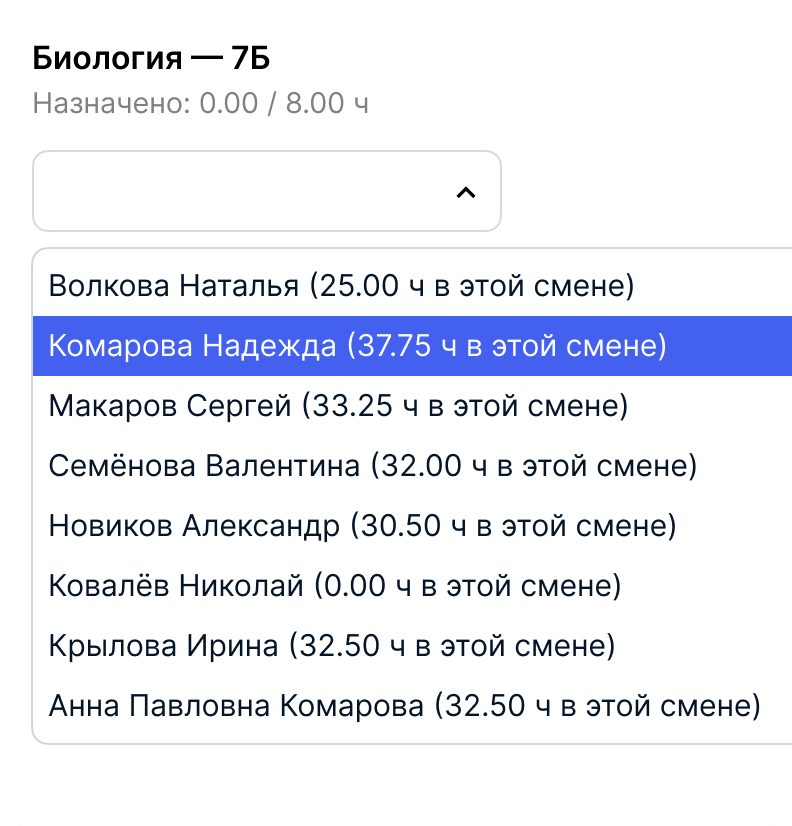
Сводная ведомость — в один клик
Когда директору нужно согласовать нагрузку с учителем, сервис формирует заявление со сводной ведомостью. В документе будут все данные для отдела кадров: ФИО педагога, предметы, классы и часы.
Обновить в течение года
Сервис автоматически пересчитывает итоги после каждого изменения. Достаточно снять или переназначить часы — и сводные ведомости покажут новый объём нагрузки.
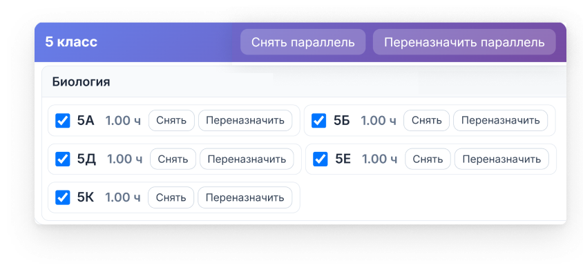
Проверить историю изменений
Назначения за последние три года хранятся в архиве. Если учитель или родители спросят, кто вёл уроки в конкретном классе, можно открыть историю изменений за нужный период.


Быстро найти данные для отчёта
Данные можно выгрузить в Эксель-таблицы и использовать для отчётов о школе: о количестве классов, классных руководителей и ответственных за кабинеты. Также сервис показывает, сколько учеников в параллели или педагогов по определённому предмету.
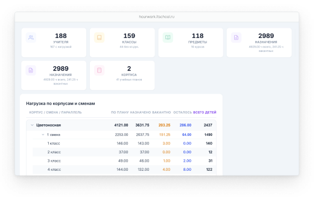
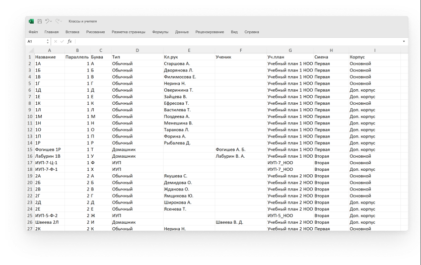
Разработчик «Тарификатора»

Олег Калугин — разработчик сервиса и специалист по школьной ИТ-инфраструктуре с 18-летним опытом.
Олег создал первую версию для общеобразовательной школы на 3500 учеников и 200 педагогов: с помощью сервиса администрация дважды подготовилась к тарификации. Сейчас Олег продолжает разработку с учётом обратной связи от школ.
Отзыв директора школы

Учебные планы для 115 классов я привязала за четыре минуты
У нас 115 классов и около 200 учителей, и я сама распределяю нагрузку. Раньше вела её в Экселе, но к январю таблица расходилась с реальностью: часы передавали на словах, поэтому не все узнавали об изменениях вовремя. Однажды из-за этого учителю некорректно начислили зарплату — мы разобрались и доплатили, но осадок остался.
Теперь в «Тарификаторе» диспетчер по расписанию, кадровик и я работаем с актуальной нагрузкой. Сводные ведомости мы печатаем в один клик. Учителя довольны: они видят, за что им платят.
Удобно, что в программе есть сведения о классном руководстве, сменах и кабинетах. Когда поздно вечером пришёл запрос из прокуратуры о занятости кабинетов, я подготовила отчёт за 20 минут — всё уже было в системе.
Первое заполнение требует сил, но потом легко копировать данные на все параллели: учебные планы для 115 классов я привязала за четыре минуты.
Программа работает в тестовом режиме, но разработчик быстро всё поправляет. Главное — у коллег одна версия нагрузки: если внесли изменение, о нём знают все, от кого зависит зарплата. Рекомендую сервис другим школам.
Ответы на вопросы
«Тарификатор» сам распределяет часы между педагогами?
Нет, часы назначает сотрудник школы. «Тарификатор» помогает предварительно распределить часы и подготовиться к тарификации. Во время учебного года в сервисе можно следить за нагрузкой педагогов, обновлять её и собирать данные для отчётов.
Можно ли менять нагрузку в течение года?
Да. Часы можно снять с одного педагога и назначить другому — «Тарификатор» сразу пересчитает сводные ведомости. Сервис фиксирует изменения, чтобы в любой момент можно было вернуть прежнюю нагрузку.
Можно ли проверить нагрузку на определённую дату?
Да. Можно выбрать нужный период и посмотреть, как менялась нагрузка у педагога, в отдельном классе или по предмету в целом. Сервис хранит историю изменений за последние три года.
Можно ли использовать сервис вместо «Паруса» или 1С?
Нет, «Тарификатор» не заменяет бухгалтерскую программу. Сервис поможет распределить педагогическую нагрузку перед переносом данных в нужную систему отчётности.
Нужны ли специальные навыки для работы в «Тарификаторе»?
Нет, достаточно обычных навыков работы с компьютером. Сервис работает в браузере, поэтому устанавливать его не нужно. Он откроется на любом устройстве с выходом в интернет. Чтобы не зависеть от подключения к сети, «Тарификатор» можно разместить на сервере вашей школы.
Где хранятся персональные данные педагогов?
Есть два варианта, где хранить информацию: на сервере вашей школы или на серверах «Тарификатора», которые работают на территории РФ. Вариант размещения можно выбрать при заключении договора. В обоих случаях увидеть персональные данные сможет только пользователь с логином и паролем.
Сколько стоит сервис?
Первый месяц — бесплатно. Если захочется продлить доступ, следующие 12 месяцев будут стоить 5000 рублей: это льготная цена для первых испытателей сервиса. Для знакомства с программой оставьте заявку на бесплатный демо-кабинет.
Посмотрите в действии
Попробуйте «Тарификатор» в демо-кабинете: измените нагрузку педагогов или учебный план — и сводные ведомости пересчитаются сами.
Ссылку на демо отправим почтой. Если захотите проверить сервис на данных своей школы, заключим договор и настроим бесплатный доступ на месяц.

Чтобы оставить заявку на апробацию в своей школе, напишите на почту oleg@kalugin66.ru